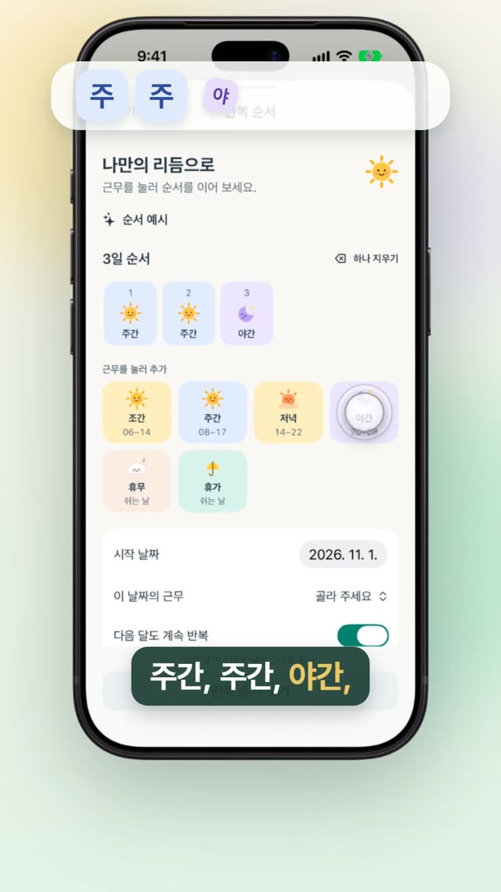
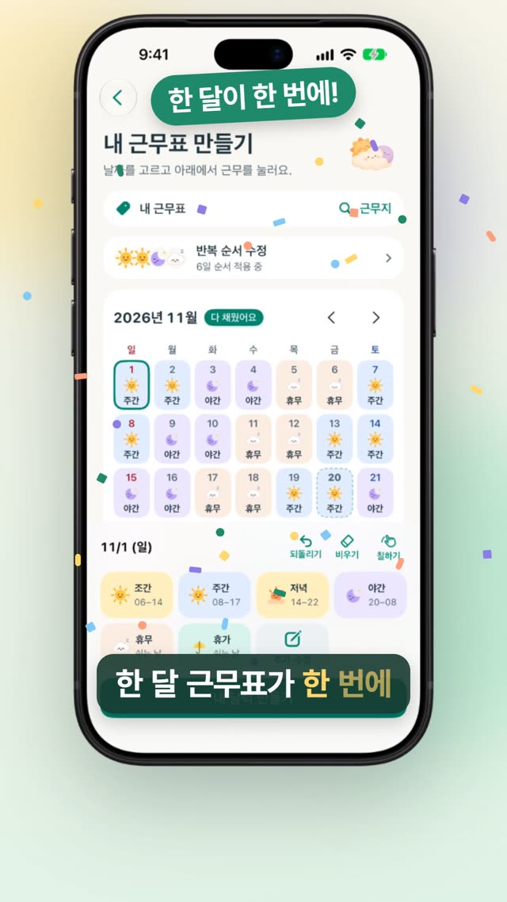

교대근무표 한 달 치를 한 번에 만들기
근무표가 나올 때마다 달력에 하루씩 옮겨 적는 일은 번거롭습니다. 주간, 야간, 휴무처럼 순서가 반복된다면 순서만 한 번 알려 주면 됩니다.
사용법
1. 반복 순서 누르기
주간, 주간, 야간, 야간, 휴무, 휴무처럼 근무가 돌아가는 순서대로 누릅니다.

2. 시작하는 날 고르기
이 순서가 시작되는 날짜를 달력에서 고릅니다.

3. 한 달 근무표 확인하기
한 달 근무가 한 번에 채워지고, 다음 달에도 같은 순서로 이어집니다.
화면은 시뮬레이터에서 실제 앱을 조작해 녹화한 것입니다. 손가락 표시는 누른 위치를 보여 주는 그래픽입니다.